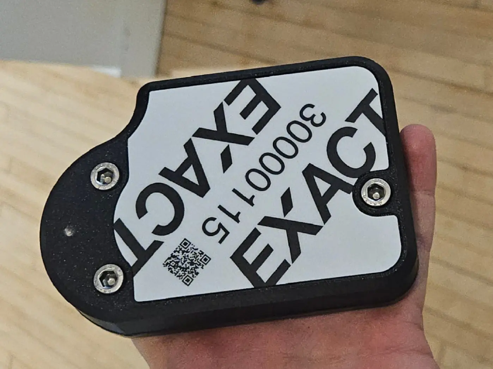
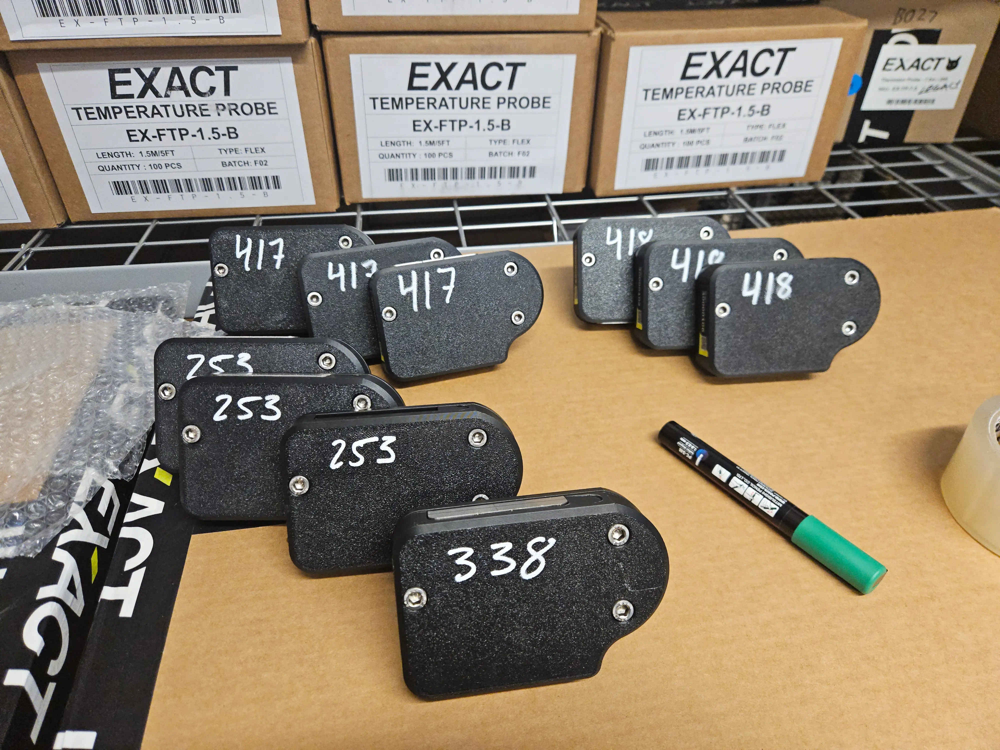
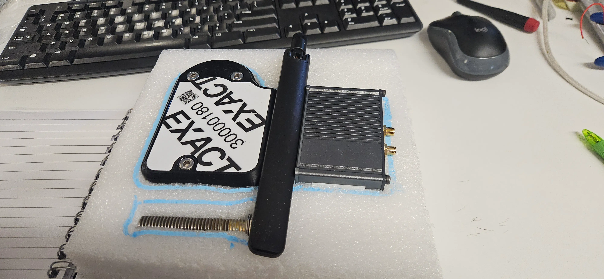
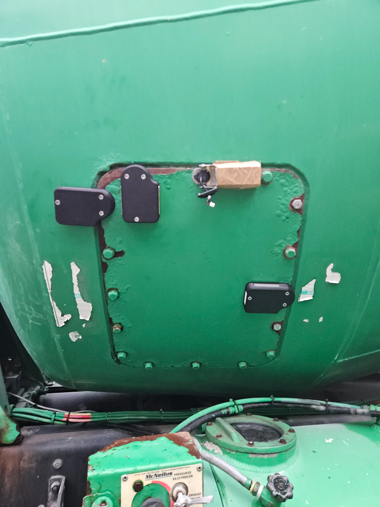
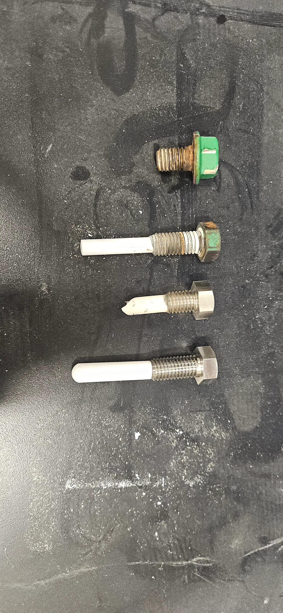
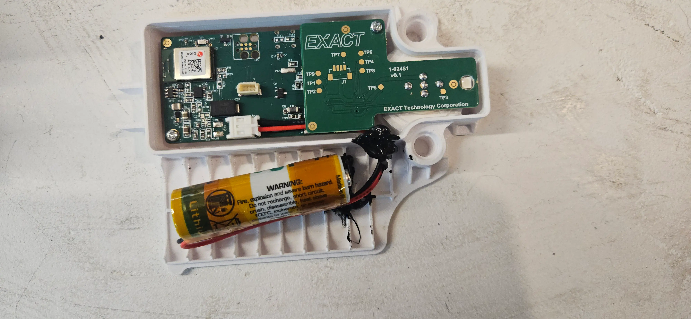
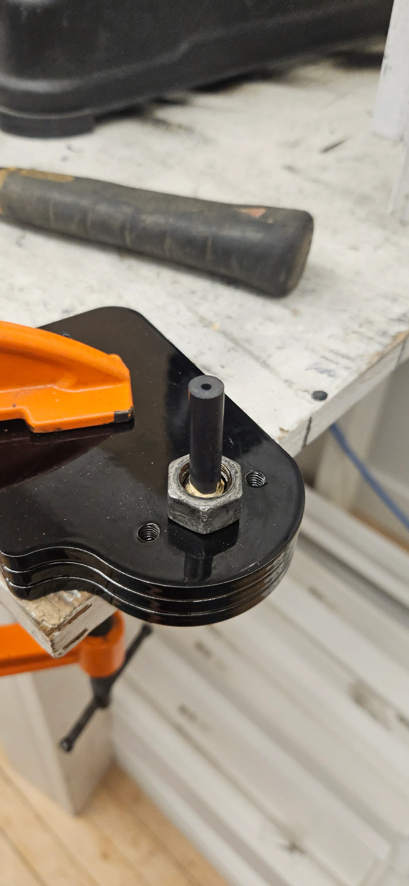
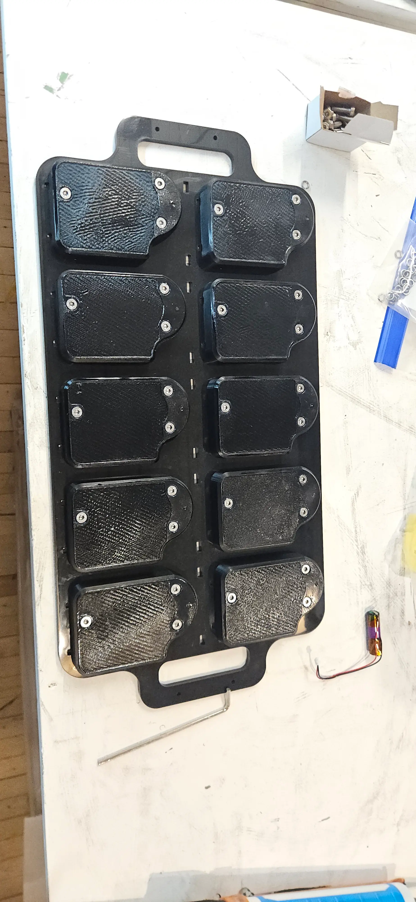
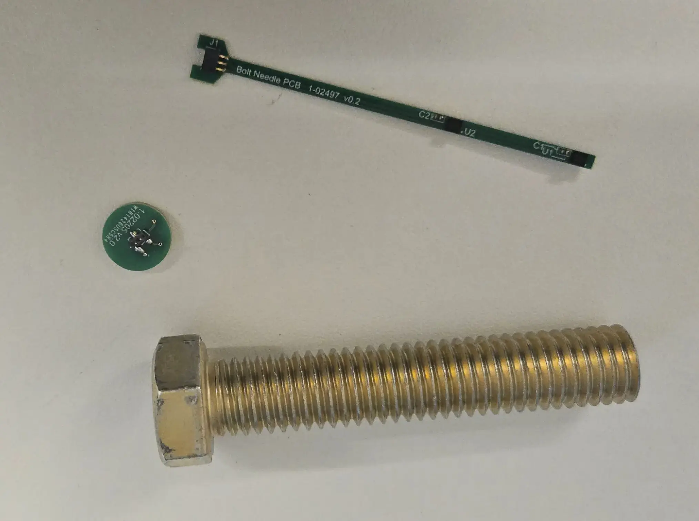

From initial concept sketches to full product, I secured leadership buy-in for a bolt-bound thermistor sensor that directly measures the temperature inside a concrete truck drum. This sensor replaces a hatch bolt, and has vibration-tested pogopins to interface easily to power and Bluetooth transmission electronics.
As the inside of the drum is effectively a ball mill of dense aggregate and heavy concrete, any in-drum sensor solution requires a highly abrasive-resistant material to extend the sensor life to spec. It took three attempts to get the material math right. I first used an alumina ceramic (Al203) sleeve (too brittle)
then a Zirconia Ceramic sleeve (Zr02), and finally, a braized 10% cobalt tungsten carbide. This was done over the course of three data collection releases to clients. Bending loading, simulation, and internal impact testing were conducted to ensure
that the design remained well above a 2x safety factor. The ZrO2 design remained marginal, and was not persued due to breaking susceptibility if not manufactured perfectly (to easy to introduce stress concentrations during the assembly process).
The enclosure is designed to be as simple as possible to use and interact with. It rides on a 6mm thick steel sled that is held to the drum using the sensor bolt. Pogopins interface to a PCBA embedded in the bolt, and a chemical-resistant gasket seals against the flat metal on the head of the bolt.
It was quite tricky to balance waterproofness, vibration resistance, and chemical resistance in this design - especially considering the caustic etching solutions used to clean concrete trucks. This enclosure has been tested to 1800psi water jets, chemical resistance up to 30% HCL at ambient conditions,
and automotive vibration conditions.
While the internal PCBA is sealed with potting, it is still recoverable for debugging and lot identification if the enclosure is cut open. The interal potting seal is done purely though plastic flexures - reducing assembly time and material costs substantially.
Due to hydraulic, power, and penumatic lines run across the truck frame parallel to the drum, I was required to keep the total allemby height under an inch. The device is battery powered and non-rechargeable. It lasts 2 years even if used daily - Note that concrete drums are usually replaced once every 10 years.
This project was a blast, and I am extremely pleased with how it turned out.








